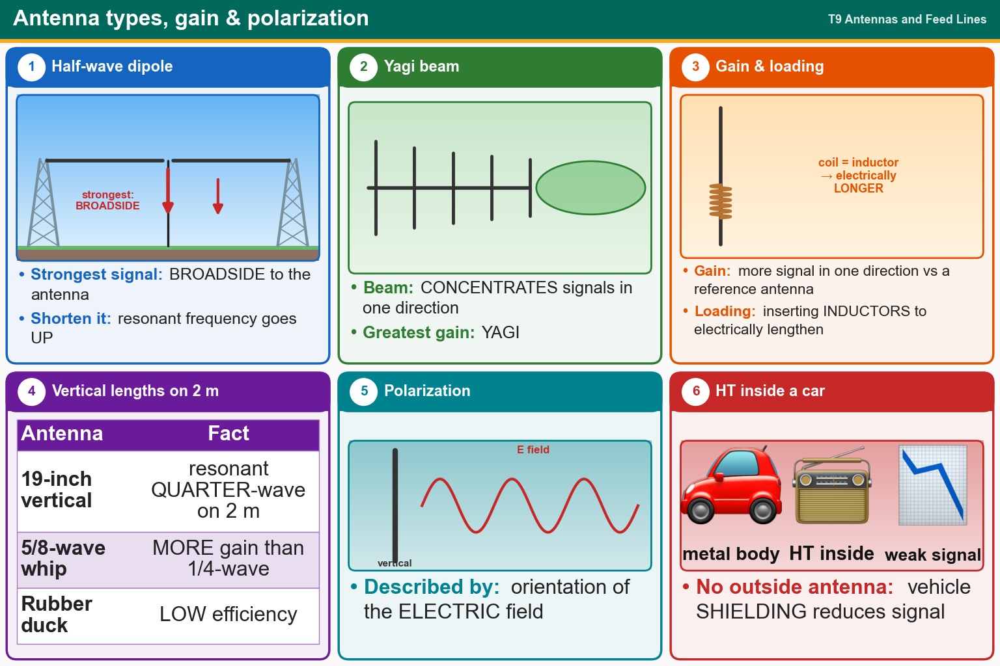

💡 Dipole radiates broadside. Yagi = most gain. Shorter antenna = higher frequency. 19-inch = quarter-wave on 2 m.
Pick an answer for each question, then press Grade at the bottom.
T9A10
In which direction does a half-wave dipole antenna radiate the strongest signal?
✔A.Broadside to the antenna
✘B.In the direction of the feed line
✘C.Equally in all directions
✘D.Off the ends of the antenna
T9A05
Which of the following increases the resonant frequency of a dipole antenna?
✘A.Inserting coils in series with radiating wires
✘B.Adding capacitive loading to the ends of the radiating wires
✔C.Shortening it
✘D.Lengthening it
T9A01
What is a beam antenna?
✔A.An antenna that concentrates signals in one direction
✘B.An antenna built from square aluminum beams
✘C.An omnidirectional antenna invented by Clarence Beam
✘D.An antenna that focuses the signal into two intense rays
T9A06
Which of the following types of antennas offers the greatest gain?
✘A.5/8 wave vertical
✔B.Yagi
✘C.Isotropic
✘D.J pole
T9A11
What is antenna gain?
✘A.The increase in impedance on receive or transmit compared to a reference antenna
✔B.The increase in signal strength in a specified direction compared to a reference antenna
✘C.The additional power that is required in the antenna when transmitting on a higher frequency
✘D.The additional power that is added to the transmitter power
T9A02
Which of the following describes a type of antenna loading?
✘A.Strengthening the radiating elements of a beam antenna to better resist wind damage
✔B.Electrically lengthening by inserting inductors in radiating elements
✘C.Inserting a resistor in the radiating portion of the antenna to make it resonant
✘D.Installing a spring in the base of a mobile vertical antenna to make it more flexible
T9A08
Why is a 19-inch-long vertical antenna often used on 2 meters?
✔A.It is a resonant quarter-wave
✘B.It is a resonant half-wave
✘C.It has low RF radiation exposure
✘D.It has high gain
T9A09
What is an advantage of a 5/8-wavelength whip antenna for VHF or UHF mobile service compared to a 1/4-wave antenna?
✔A.It has more gain
✘B.It radiates at a higher angle
✘C.It has lower SWR
✘D.It has lower impedance
T9A04
What is a disadvantage of a handheld radio transceiver’s short flexible antenna compared to a full-sized quarter-wave antenna?
✘A.It is more susceptible to receiver desensitization
✘B.It only works on analog signals, not digital ones
✘C.It transmits only circularly polarized signals
✔D.It has low efficiency
T9A03
How is the polarization of an antenna described?
✘A.By the direction of radiation
✔B.By the orientation of the electric field
✘C.By the shape of the driven element
✘D.By the orientation of the magnetic field
T9A07
What is a potential drawback of using a handheld VHF transceiver inside a vehicle that lacks an externally mounted antenna?
✘A.The handheld will overheat due to reflected power in the vehicle
✔B.Signal strength is reduced due to the shielding effect of the vehicle
✘C.The bandwidth of the antenna will decrease, increasing SWR
✘D.The SWR might decrease, decreasing the signal strength